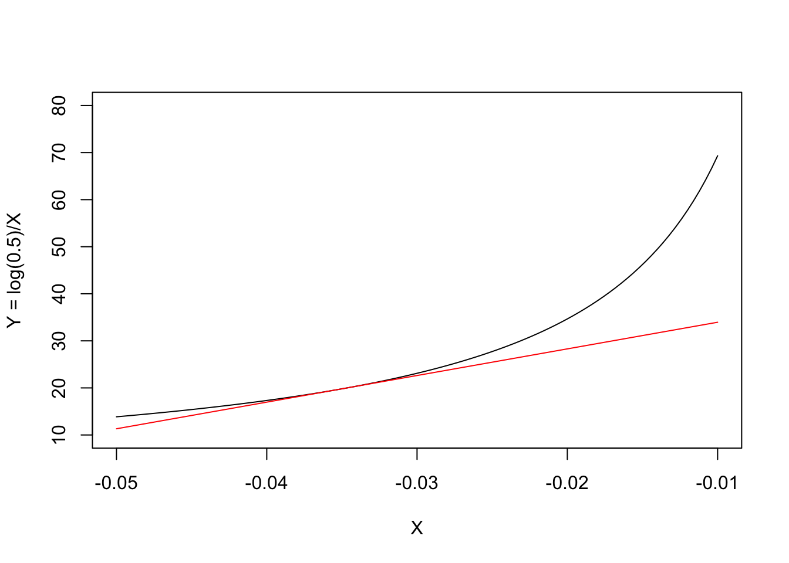

Y <- log(0.5)/-0.035
Y[1] 19.80421In a recent post I have shown that we can build linear combinations of model parameters (see here ). For example, if we have two parameter estimates, say \(X\) and \(Z\), with standard errors respectively equal to \(\sigma_X\) and \(\sigma_Z\) and a covariance of \(\sigma_{XZ}\) we can build a linear combination as follows:
\[ Y = f(X,Z) = aX + bZ + c\]
where \(a\), \(b\) and \(c\) are three numeric constants. The standard error for this combination can be obtained as:
\[ \sigma_Y = \sqrt{ a^2 \sigma^2_X + b^2 \sigma^2_Z + 2ab \, \sigma_{XZ} }\]
In biology, nonlinear transformations are much more frequent than linear transformations. Nonlinear transformations are, e.g., \(Y = f(X,Z) = exp(X, Z)\), or, \(Y = 1/(X + Z)\); we may wonder: what is the standard error for these nonlinear transformations? The solution to this problem is named the ‘delta method’ and may be beyond biologists with an average level of statistical proficiency. I thought it might be useful to talk about it, by using a very simple language and a few examples.
Let’s start with the transformation of a single variable \(Y = f(X)\).
A herbicide has proven to follow a first order degradation kinetic in soil, with constant degradation rate \(X = -0.035\) and standard error equal \(\sigma_X = 0.00195\). What is the half-life of this herbicide and its standard error?
Every pesticide chemist knows that the half-life is derived by the degradation rate, according to the following equation:
\[ y = \frac{\log(0.5)}{x}\]
Therefore, if we plug-in x = X, the half-life of our herbicide is:
Y <- log(0.5)/-0.035
Y[1] 19.80421But … what is the standard error of this half-life? There is some uncertainty around the estimate of \(Y\) and it is clear that such an uncertainty should propagate to the estimate of \(Z = f(Q)\); unfortunately, the transformation is nonlinear and we cannot use the expression given above for linear transformations.
The basic idea behind the delta method is that most of the simple nonlinear functions, which we use in biology, can be locally approximated by the tangent line through a point of interest. For example, our nonlinear half-life function is \(y = f(x) = \frac{\log(0.5)}{x}\) and, obviously, we are interested in the point where \(x = X = -0.035\). In the graph below, we have represented our nonlinear function (in black) and its tangent line (in red) through the above point: we can see that the approximation is fairly good in the close vicinity of \(Q = -0.035\).

What is the equation of the tangent line? In general, if the nonlinear function is \(f(x)\), you may remember from high school that the slope \(m\) of the tangent line is equal to the first derivative of \(f(x)\), that is \(f'(x)\). You may also remember that the equation of a line with slope \(m\) through the point \(P(X, Y)\) is \(y - Y = m(x - X)\). As \(Y = f(X)\), the tangent line has equation:
\[y = f(X) + f'(Y)(x - X)\]
In order to write the equation of the red line in the Figure above, we need to consider that \(X = -0.035\) and we need to be able to calculate the first derivative of our nonlinear half-life fuction. I am not able to derive the expression of the first derivative for all nonlinear functions and it was a relief for me to discover that R can handle this task in simple ways, e.g. by using the function D(). For our case, it is:
D(expression(log(0.5)/X), "X")-(log(0.5)/X^2)Therefore, we can use this R function to calculate the slope \(m\) of the tangent line in the figure above:
X <- -0.035
m <- eval( D(expression(log(0.5)/X), "X") )
m[1] 565.8344We already know that \(f(-0.035) = 19.80421\). Therefore, we can write the equation of the tangent line (red line in the graph above):
\[y = 19.80421 + 565.8344 \, (x + 0.035)\]
that is:
\[y = 19.80421 + 565.8344 \, x + 565.8344 \cdot 0.035 = 39.60841 + 565.8344 \, x\]
Now, we have two functions:
Therefore, we can approximate the former with the latter! If we use the linear function, we see that the half-life is:
39.60841 + 565.8344 * -0.035[1] 19.80421which is what we expected. The advantage is that we can now use the low of propagation of errors to estimate the standard error (see the first and second equation in this post):
\[ \sigma_{ \left[ 39.60841 + 565.8344 \, X \right]} = \sqrt{ 562.8344^2 \, \sigma^2_X}\]
Here we go:
sqrt( m^2 * (0.00195 ^ 2) )[1] 1.103377If we have a nonlinear transformation \(f(X)\), the standard error for this transformation is approximated by knowing the first derivative \(f'(X)\) and the standard error of \(X\):
\[\sigma_{G(X)} \simeq \sqrt{ [f'(X)]^2 \, \sigma^2_X }\]
A paper reports that the mean number of microorganisms in a substrate, on a logarithmic scale, was \(X = 5\) with standard error \(\sigma = 0.84\). It is easy to derive that the actual number of micro-organisms was \(\exp{5} = 148.4132\); what is the standard error of the back-transformed mean?
The first derivative of our nonlinear function is:
D(expression(exp(X)), "X")exp(X)and thus the slope of the tangent line is:
X <- 5
m <- eval( D(expression(exp(X)), "X") )
m[1] 148.4132According to the function above, the standard error for the back-transformed mean is:
sigma <- 0.84
sqrt( m^2 * sigma^2 )[1] 124.6671When the combination is nonlinear and involves two parameters, such as:
\[Y = \frac{X}{Z} \quad \textrm{or} \quad Y = X \, Z\]
the delta method requires a slightly more complex formula, which we will see by using another example.
The concentration of selenium in olive drupes was found to be \(3.1 \, \mu g \,\, g^{-1}\) with standard error equal to 0.8. What is the intake of selenium when eating one drupe? Please, consider that one drupe weights, on average, 3.4 g (SE = 0.31) and that selenium concentration and drupe weight show a covariance of 0.55.
The amount of selenium is easily calculated as:
X <- 3.1; Z = 3.4
Y <- X * Z
Y[1] 10.54Delta standard errors can be obtained by considering the partial derivatives for each of the two variables and combining them as follows:
dX <- eval( D(expression(X * Z), "X") )
dZ <- eval( D(expression(X * Z), "Z") )
sigmaX <- 0.8; sigmaZ <- 0.31; sigmaXZ <- 0.55
sqrt( (dX^2) * sigmaX^2 + (dZ^2) * sigmaZ^2 + 2 * dX * dZ * sigmaXZ )[1] 4.462726In general terms, when \(y = f(x, z)\) and it is nonlinear, it is:
\[ \sigma_y = \sqrt{ (f'_x)^2 \, \sigma^2_x + (f'_z)^2 \, \sigma^2_z + 2f'_x\,f'_z \, \sigma_{xz} }\]
For those of you who would like to get involved with matrix notation: we can reach the same result via matrix multiplication (see below). This might be easier when we have more than two variables to combine.
der <- matrix(c(dX, dZ), 1, 2)
sigma <- matrix(c(sigmaX^2, sigmaXZ, sigmaXZ, sigmaZ^2), 2, 2, byrow = T)
sqrt( der %*% sigma %*% t(der) ) [,1]
[1,] 4.462726In R there is a shortcut function to calculate delta standard errors, that is available in the ‘car’ package. In order to use it, we need to have:
For the first example, we have:
obj <- c("X" = -0.035)
sigma <- matrix(c(0.00195^2), 1, 1)
library(car)Loading required package: carDatadeltaMethod(object = obj, g="log(0.5)/X", vcov = sigma) Estimate SE 2.5 % 97.5 %
log(0.5)/X 19.8042 1.1034 17.6416 21.967For the second example:
obj <- c("X" = 5)
sigma <- matrix(c(0.84^2), 1, 1)
deltaMethod(object = obj, g="exp(X)", vcov = sigma) Estimate SE 2.5 % 97.5 %
exp(X) 148.41 124.67 -95.93 392.76For the third example:
obj <- c("X" = 3.1, "Z" = 3.4)
sigma <- matrix(c(0.8^2, 0.55, 0.55, 0.31^2), 2, 2, byrow = T)
deltaMethod(object = obj, g="X * Z", vcov = sigma) Estimate SE 2.5 % 97.5 %
X * Z 10.5400 4.4627 1.7932 19.287The function ‘deltaMethod()’ is very handy to be used in connection with model objects, as we do not need to provide anything, but the transformation function. But this is something that requires another post!
However, two final notes relating to the delta method need to be pointed out here:
Thanks for reading—and don’t forget to check out my new book below!
Andrea Onofri
Department of Agricultural, Food and Environmental Sciences
University of Perugia (Italy)
Send comments to: andrea.onofri@unipg.it

Post written on 25/5/2019 and edited on 22/11/2024 and 12/12/2025